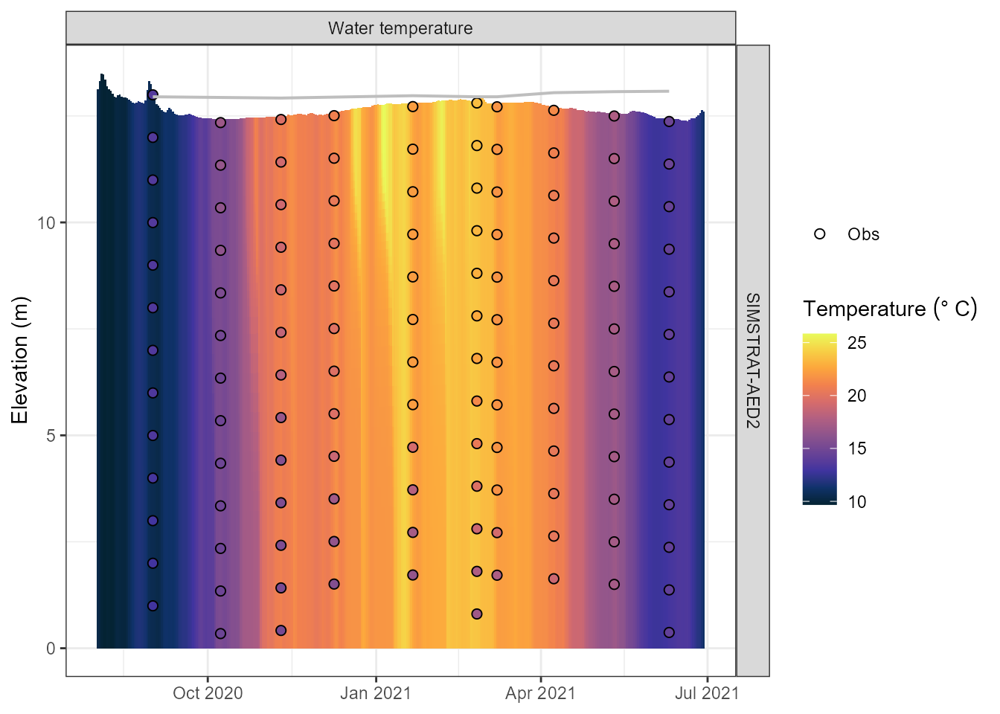
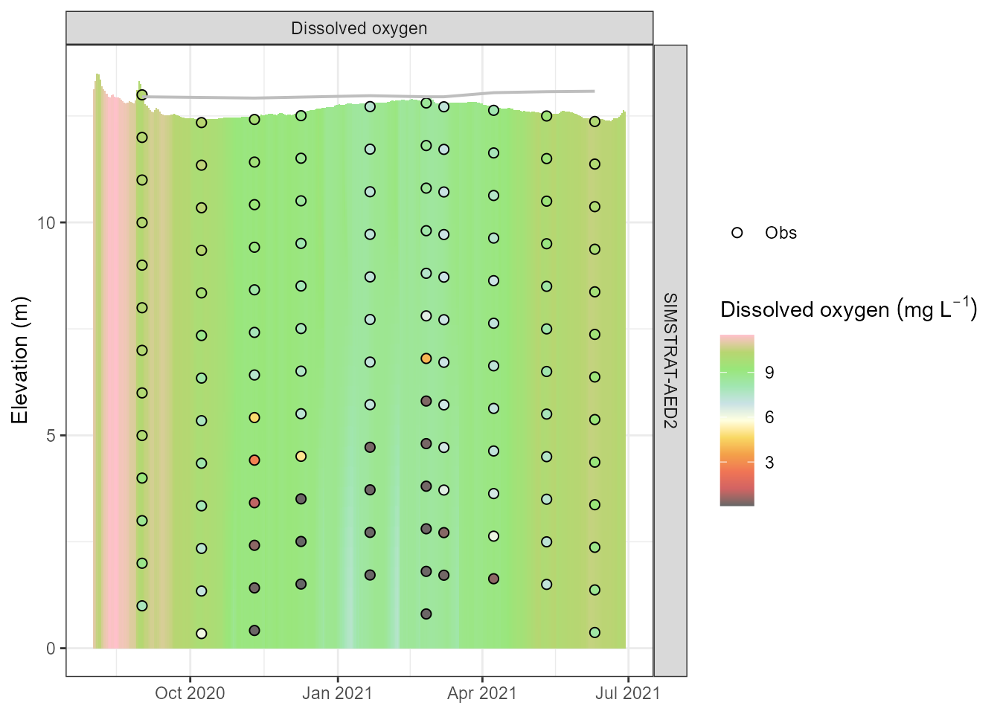
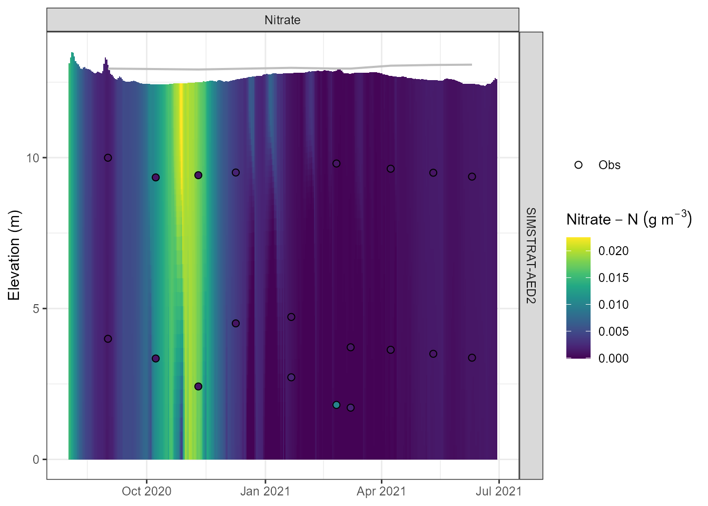
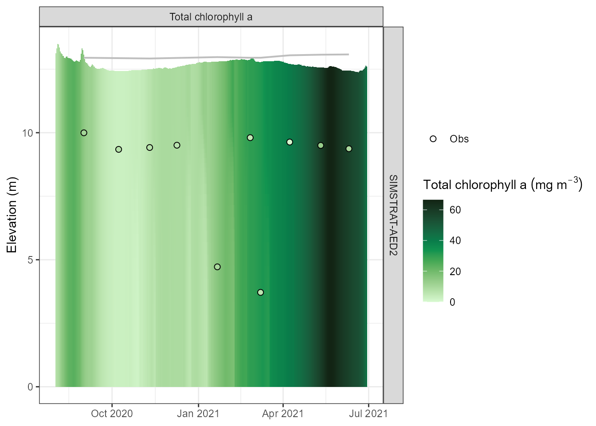
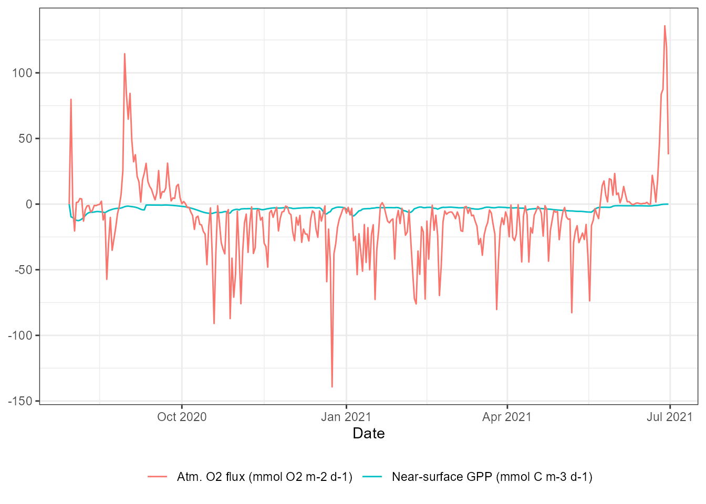

Simstrat-AED2: The 1-D k-epsilon lake model coupled with AED2
Source:vignettes/articles/simstrat-aed2.Rmd
simstrat-aed2.RmdIntroduction
Simstrat
Simstrat is a one-dimensional (1-D), k-epsilon lake model for the physical simulation of stratification and mixing in water reservoirs, including basin morphology, atmospheric interaction, and inflow/outflow. A reservoir is represented as a horizontally-averaged, vertically-resolved water column whose evolution is driven by atmospheric forcing. Simstrat was originally described by Goudsmit et al. (2002) and has since been applied to lakes and reservoirs with a wide range of physical properties. Its key architectural features include:
- k-epsilon turbulence closure — turbulent kinetic energy (k) and its dissipation rate (epsilon) are explicitly modelled, alongside water velocities, temperature, salinity, and buoyancy.
- Internal seiche parameterisation — a fraction of wind energy is converted into seiche (internal wave) energy, which is redistributed through the water column and contributes to deep mixing — a process 1-D models otherwise struggle to represent.
- Flexible inflows — inflows can be placed at a fixed depth (“manual” mode) or allowed to plunge and stratify according to their density (“density-driven” mode), entraining ambient water as they sink until reaching neutral buoyancy.
- Ice/snow model — a 3-layer ice model (black ice, white ice, snow) based on MyLake, with depth-varying light penetration.
- Coupling with AED2 — from version 3.0 onwards, Simstrat always includes a coupling to the AED2 biogeochemical library (the coupling can be switched off for purely physical simulations).
Source code: :github: https://github.com/Eawag-AppliedSystemAnalysis/Simstrat
References
Goudsmit, G-H., Burchard, H., Peeters, F., and Wuest, A. (2002). Application of k-epsilon turbulence models to enclosed basins: The role of internal seiches. Journal of Geophysical Research: Oceans, 107(C12), 23-1–23-13.
Schmid, M. and Koster, O. (2016). Excess warming of a Central European lake driven by solar brightening. Water Resources Research, 52, 8103–8116. (Heat-flux parameterisation used by Simstrat since v1.6.)
Gaudard, A., Schwefel, R., Vinna, L.R., Schmid, M., Wuest, A., and Bouffard, D. (2017). Optimizing the parameterization of deep mixing and internal seiches in one-dimensional hydrodynamic models: a case study with Simstrat v1.3. Geoscientific Model Development, 10, 3411–3423. (An applied sensitivity/calibration study of Simstrat’s seiche and mixing parameters.)
Schwefel, R., Gaudard, A., Wuest, A., and Bouffard, D. (2016). Effects of climate change on deepwater oxygen and winter mixing in a deep lake (Lake Geneva): Comparing observational findings and modeling. Water Resources Research, 52, 8811–8826. (An application of Simstrat to a large, deep, dimictic lake.)
The AED2 biogeochemical library
Simstrat couples to the same AED2 (Aquatic
Ecodynamics v2) library used by the GLM-AED workflow in AEME (see the GLM-AED article) — confirmed directly: the
phytoplankton and zooplankton group-parameter files AEME bundles for the
two models (aed2_phyto_pars.nml,
aed2_zoop_pars.nml) are byte-identical. Each biogeochemical
process is implemented as a self-contained module that can be switched
on or off independently.
Further information is available from the AED science website, which the Simstrat User Manual itself refers readers to for AED2 details.
AED2 modules available in Simstrat-AED2
| Module | AED2 name | Description |
|---|---|---|
| Oxygen | aed2_oxygen |
Dissolved-oxygen dynamics including reaeration and sediment oxygen demand (SOD). |
| Carbon | aed2_carbon |
Dissolved inorganic carbon (DIC), pH, and methane (CH4) cycling, including air-water gas exchange. |
| Silica | aed2_silica |
Reactive silica cycling — important for diatom growth. |
| Nitrogen | aed2_nitrogen |
Ammonium (NH4+), nitrite/nitrate (NO2-/NO3-), and N2O; nitrification, denitrification. |
| Phosphorus | aed2_phosphorus |
Dissolved reactive phosphorus (FRP), including PO4 adsorption. |
| Organic matter | aed2_organic_matter |
Particulate and dissolved organic carbon/nitrogen/phosphorus pools; hydrolysis and mineralisation. |
| Phytoplankton | aed2_phytoplankton |
Multi-group phytoplankton dynamics: growth, respiration, nutrient uptake, light limitation, settling, mortality. |
| Zooplankton | aed2_zooplankton |
Zooplankton grazing and dynamics. |
| Totals | aed2_totals |
Diagnostic aggregates: TN, TP, TOC. |
Unlike GLM-AED (where set_glm_aed_models() lets you
toggle modules explicitly), Simstrat-AED2’s active module list is
derived automatically from the biogeochemical variables
requested via model_controls/ set_vars_sim() —
AEME writes the corresponding entries into aed2.nml’s
&aed2_models block for you (including force-including
any module that an active module’s target-variable links depend on,
e.g. phytoplankton depends on carbon, nitrogen, phosphorus, silica, and
oxygen).
Simstrat-AED2 Parameter Library
The simstrat_aed2_parameter_library dataset provides a
comprehensive list of parameters used in the Simstrat-AED2
configuration, including their default (template) values, units, and a
brief description of each parameter’s role. The physical parameters are
documented in Table 1 of the Simstrat User Manual; the AED2
biogeochemical parameters largely share their descriptions with
glm_aed_parameter_library (see the GLM-AED article), since both models couple to
the same AED2 library.
AED2 Phytoplankton Group Parameters
Simstrat-AED2 and GLM-AED share the same bundled AED2 phytoplankton
parameter database (aed2_phyto_pars.nml), so the group
parameter table is identical to the one shown in the GLM-AED article:
Getting started
We will use the example lake dataset bundled with the AEME package throughout this vignette.
aeme_file <- system.file("extdata/aeme.rds", package = "AEME")
aeme <- readRDS(aeme_file)
aeme#> #> ── AEME ──────────────────────────────────────────────────────────────────────── #> #> ── Lake ── #> #> Wainamu (ID: 45819) #> • Lat: -36.89; Lon: 174.47 #> • Elev: 23.64m; Depth: 13.07m; Area: 152343 m2 #> #> ── Time ── #> #> • Start: 2020-08-01; Stop: 2021-06-30; Time step: 3600 #> • Spin up (days): GLM: 2; GOTM: 1; DYRESM: 1; Simstrat: 2 #> #> ── Configuration ── #> #> • Model: #> • Path: Not set #> • Model controls: Absent #> • Use biogeochemical model: No #> ┌ Model Configuration ─────────────────────────────────────────┐ #> │ Model Physical Biogeochemical │ #> │ --- │ #> │ DY-CD Absent Absent │ #> │ GLM-AED Absent Absent │ #> │ GOTM-WET Absent Absent │ #> │ SIMSTRAT-AED2 Absent Absent │ #> └──────────────────────────────────────────────────────────────┘ #> #> ── Observations ── #> #> • Lake: Present; Level: Present #> #> ── Input ── #> #> • Initial profile: Absent; Initial depth: 13.07m #> • Hypsograph: Present (n=132) #> • Meteo: Present; Use longwave: TRUE; Kw: 1.31 #> #> ── Inflows ── #> #> • Number of inflows: 1; Names: FWMT #> • Scaling factors: DY-CD: 1; GLM-AED: 1; GOTM-WET: 1; Simstrat-AED2: 1 #> #> ── Outflows ── #> #> • Number of outflows: 1; Names: outflow; Elevations: -1 #> • Scaling factors: DY-CD: 1; GLM-AED: 1; GOTM-WET: 1; Simstrat-AED2: 1 #> #> ── Water Balance ── #> #> • Method: 2; Use: obs #> • Modelled: Absent; Water balance: Absent #> #> ── Parameters ── #> #> • Number of parameters: 0 #> #> ── Output ── #> #> • DY-CD: 0 #> • GLM-AED: 0 #> • GOTM-WET: 0 #> • SIMSTRAT-AED2: 0 #> • Variables: 0 #> None
Building a Simstrat-AED2 simulation
Model controls
As with the other models, get_model_controls() returns a
data frame that governs which biogeochemical variables are simulated and
how they are initialised. Pass use_bgc = TRUE to enable
AED2.
model_controls <- get_model_controls(use_bgc = TRUE)
head(model_controls)
#> var_aeme simulate inf_default initial_wc initial_sed conversion_aed
#> 1 CAR_doc TRUE 0 0.5 1e+06 0.012011
#> 2 CAR_poc TRUE 0 0.2 1e-01 0.012011
#> 3 CHM_oxy TRUE 10 10.0 1e+01 0.032000
#> 4 CHM_salt TRUE 0 0.0 0e+00 1.000000
#> 5 HYD_dens TRUE NA NA NA 1.000000
#> 6 HYD_strat TRUE NA NA NA 1.000000
vars_sim <- c(
"HYD_strat", # stratification flag
"HYD_temp", # water temperature
"HYD_thmcln", # thermocline depth
"CHM_oxy", # dissolved oxygen
"CHM_oxycln", # oxycline depth
"NIT_amm", # ammonium
"NIT_nit", # nitrate
"NIT_tn", # total nitrogen
"PHS_frp", # filterable reactive phosphorus
"PHS_tp", # total phosphorus
"PHY_tchla" # total chlorophyll-a
)
model_controls <- set_vars_sim(
model_controls = model_controls,
vars_sim = vars_sim
)Build the model
We will build the model in a directory called aeme,
path <- "aeme"build_aeme() translates the AEME object into all
configuration files required by Simstrat-AED2:
simstrat.par, Bathymetry.dat,
Grid.dat, MeteoForcing.dat,
InitialConditions.dat, the inflow/outflow/temperature/
salinity time-depth grid files, and (with use_bgc = TRUE)
aed2.nml plus the
AED2_initcond//AED2_inflow/ folders.
model <- "simstrat_aed2"
aeme <- build_aeme(
aeme = aeme,
model = model,
path = path,
model_controls = model_controls,
ext_elev = 3,
use_bgc = TRUE
)The configuration files are stored in the configuration
slot of the aeme object. For Simstrat-AED2 the slot
contains the parsed simstrat.par (under
hydrodynamic) and aed2.nml (under
bgc):
cfg <- configuration(aeme)
names(cfg[["simstrat_aed2"]])
#> [1] "hydrodynamic" "bgc"
cfg[["simstrat_aed2"]]$hydrodynamic$ModelConfig[c("InflowMode", "IceModel",
"SnowModel", "TurbulenceModel")]
#> $InflowMode
#> [1] 2
#>
#> $IceModel
#> [1] 1
#>
#> $SnowModel
#> [1] 1
#>
#> $TurbulenceModel
#> [1] 1Simstrat-AED2 specific features
Automatic water balance fitting
Before writing the Simstrat configuration, build_aeme()
estimates a lake water balance for each model, fitting a weir-style
outflow correction so that simulated lake level tracks observations.
This uses each model’s own evaporation formulation — Simstrat’s is a
Livingstone & Imboden-style wind function (free convection driven by
the air-water temperature difference, combined in quadrature with a
wind-driven forced-convection term, using a Gill (1992) saturation
vapour pressure), taken directly from Simstrat’s own
strat_forcing.f90 rather than the simpler bulk-aerodynamic
formula shared by GLM-AED and DYRESM-CAEDYM. This matters because the
fitted outflow correction is added directly to the model’s own outflow
file, so using the wrong evaporative demand would bias the fitted water
balance.
# (build_aeme() prints, among other things:)
#> -- Calculating water balance --
#> Estimating lake water levels for simstrat_aed2
#> i Optimizing parameters for water balance
#> v Optimization Complete: C = 0.3571, h_inv = 23.4849, Final RMSE = 0.136Inflow modes
Simstrat supports two inflow placement strategies, set via
ModelConfig.InflowMode in simstrat.par:
-
Manual (
InflowMode = 1) — inflows enter at a fixed depth given in the inflow file, unaffected by water density. -
Density-driven (
InflowMode = 2) — inflows plunge and stratify according to their density relative to the water column, entraining water as they sink until reaching neutral buoyancy. This is the default used by AEME’s Simstrat-AED2 template, since a 1-D model would otherwise spread an entire inflow across whole horizontal layers at an arbitrary fixed depth, which can noticeably bias the vertical distribution of heat and dissolved constituents.
Ice and snow
The bundled template also enables Simstrat’s 3-layer ice/snow model
(IceModel = 1, SnowModel = 1), which tracks
black ice, white (snow) ice, and snow thickness, with a distinct
light-penetration formulation for each. This is most relevant for
seasonally-ice-covered lakes; the freez_temp,
snow_temp, wat_albedo, and
p_sw_ice parameters in the parameter library above
configure it.
The simstrat.par template is copied once, not
re-applied
build_simstrat() only copies AEME’s bundled
simstrat.par template into a lake’s
simstrat_aed2/ directory the first time that lake
is built — every subsequent build_aeme() call reads back
and rewrites that same per-lake file (updating only the specific fields
build_aeme() itself manages, like file paths,
Simulation dates, and lat/p_air).
This keeps any manual edits you make to a lake’s own
simstrat.par from being silently discarded on rebuild, but
it also means a change to the package template
(e.g. AED2Config.OutputDiagnosticVars, or any
ModelParameters default) only takes effect for lakes built
after the change — an already-built lake directory keeps
whatever it already had. To pick up a template change on an existing
lake, either delete that lake’s simstrat_aed2/ directory
and rebuild, or edit the per-lake simstrat.par directly (as
shown for OutputDiagnosticVars below).
Visualising model output
Temperature and stratification
plot_output() produces a filled contour plot for
depth-varying variables (e.g. temperature) and a time-series line plot
for scalar variables:
plot_output(aeme = aeme, model = model, var_sim = "HYD_temp")
Simulated water temperature (degC) at each model depth over time.
Water quality variables
Any variable that was listed in vars_sim and is present
in the output can be plotted the same way:
plot_output(aeme = aeme, model = model, var_sim = "CHM_oxy")
Simulated dissolved oxygen (mmol O2 m-3) profiles.
plot_output(aeme = aeme, model = model, var_sim = "NIT_nit")
Simulated nitrate (mmol N m-3) profiles.
PHY_tchla (total chlorophyll-a) also plots
without any extra setup:
plot_output(aeme = aeme, model = model, var_sim = "PHY_tchla")
Simulated total chlorophyll-a (ug/L) profiles.
PHY_tchla is not itself an AED2 state variable
— it is a diagnostic variable, computed internally by
aed2_phytoplankton from the active phytoplankton groups’
biomass. It only reaches output.nc because AEME’s bundled
simstrat.par template sets
AED2Config.OutputDiagnosticVars to true. See
the AED2 diagnostic variables
section below for what that switch controls, why it matters, and how to
interpret the wider set of diagnostics it unlocks.
Assessing model performance
When observations are stored in the aeme object,
assess_model() computes a suite of skill metrics (RMSE,
NSE, bias, Pearson r, etc.) for each simulated variable:
skill <- assess_model(aeme = aeme, model = model)
skill
#> Model var_sim bias mae rmse nmae nse d2 r
#> 1 SIMSTRAT-AED2 CAR_doc -1.539 1.539 1.719 0.566 -12.341 0.632 -0.217
#> 2 SIMSTRAT-AED2 HYD_strat -0.700 0.700 0.837 1.000 -2.333 0.380 NA
#> 3 SIMSTRAT-AED2 HYD_thmcln 6.466 6.466 7.109 0.673 -4.794 0.510 NA
#> 4 SIMSTRAT-AED2 PHY_tchla 19.482 20.407 27.288 2.823 -67.808 0.845 0.176
#> 5 SIMSTRAT-AED2 NIT_amm -0.006 0.009 0.021 0.744 -0.158 0.142 -0.145
#> 6 SIMSTRAT-AED2 NIT_nit 0.002 0.004 0.007 2.384 -10.315 1.165 -0.185
#> 7 SIMSTRAT-AED2 PHS_frp -0.001 0.001 0.001 0.422 -0.541 0.266 0.224
#> 8 SIMSTRAT-AED2 CHM_oxy 2.488 2.539 3.787 0.368 -0.404 0.229 0.576
#> 9 SIMSTRAT-AED2 CHM_salt -0.117 0.117 0.117 1.000 -328.984 0.914 NA
#> 10 SIMSTRAT-AED2 HYD_temp 0.735 1.777 2.415 0.099 0.398 0.221 0.862
#> rs r2 B n obs_na sim_na name_text
#> 1 -0.294 0.047 0.003 10 0 0 Dissolved organic carbon
#> 2 NA 0.000 0.000 10 0 0 Stratified
#> 3 NA 0.000 0.000 10 0 0 Thermocline depth
#> 4 0.067 0.031 0.000 10 0 0 Total chlorophyll a
#> 5 0.102 0.021 0.010 20 0 0 Ammoniacal nitrogen
#> 6 -0.345 0.034 0.003 20 0 0 Nitrate
#> 7 0.322 0.050 0.020 20 0 0 Phosphate
#> 8 0.714 0.331 0.138 125 0 0 Dissolved oxygen
#> 9 NA 0.000 0.000 125 0 0 Salinity
#> 10 0.856 0.742 0.463 125 0 0 Water temperature
#> name_parse
#> 1 Dissolved~organic~carbon~(g~m^-3)
#> 2 Stratified~(1)
#> 3 Thermocline~depth~(m)
#> 4 Total~chlorophyll~a~(mg~m^-3)
#> 5 Ammoniacal~nitrogen~(g~m^-3)
#> 6 Nitrate-N~(g~m^-3)
#> 7 Phosphate-P~(g~m^-3)
#> 8 Dissolved~oxygen~(mg~L^-1)
#> 9 Salinity~(PSU)
#> 10 Temperature~(degree~C)AED2 diagnostic variables
State variables vs. diagnostic variables
Every AED2 module tracks two kinds of quantities:
-
State variables (
OXY_oxy,NIT_amm,NIT_nit,PHS_frp,CAR_dic,OGM_doc,PHY_<group>, …) are the variables AED2 actually integrates forward in time — mass-balance pools with their own initial condition, inflow loading, and (where applicable) sediment exchange. Simstrat writes these tooutput.ncunconditionally whenever the owning module is active — that’s whyCHM_oxy/NIT_nitabove needed no extra configuration. -
Diagnostic variables (
PHY_TCHLA,PHY_GPP,OXY_atm_oxy_flux,NIT_nitrif, …) are quantities computed from the state variables at each timestep — reaction rates, fluxes across an interface, or derived aggregates — but not themselves part of the mass balance. They exist purely for interpretation and diagnosis of why the state variables are behaving the way they are.
Because there can be dozens of these per module, Simstrat gates all
AED2 diagnostics behind a single switch,
AED2Config.OutputDiagnosticVars in
simstrat.par. AEME’s bundled template now sets this to
true (it defaulted to false in earlier package
versions), so diagnostics are available out of the box — as demonstrated
by PHY_tchla above. You can confirm the setting for a built
lake with:
sim_dir <- file.path(get_lake_dir(aeme, path), model)
par <- jsonlite::fromJSON(file.path(sim_dir, "simstrat.par"), simplifyVector = FALSE)
par$AED2Config$OutputDiagnosticVars
#> [1] TRUEIf you build on top of a lake directory that was created with an
older version of the template (OutputDiagnosticVars = false
already written to its own simstrat.par), the switch will
not update automatically — see Simstrat-AED2 specific features above for
why build_aeme() only copies the template into directories
that don’t already have a simstrat.par. Flip it manually
and re-run in that case, exactly as shown for
sim_dir/par above but setting
par$AED2Config$OutputDiagnosticVars <- TRUE before
writing it back out.
What’s available, and how to interpret it
Diagnostics fall into a few interpretable categories. Units and
descriptions below are taken directly from the AED2 source
(aed2_oxygen.F90, aed2_carbon.F90,
aed2_nitrogen.F90, aed2_phosphorus.F90,
aed2_silica.F90, aed2_organic_matter.F90,
aed2_phytoplankton.F90):
Interface exchange fluxes — mass crossing the
atmosphere-water or sediment-water interface. Verified from source
(aed2_oxygen.F90’s
aed2_calculate_surface_oxygen/aed2_calculate_benthic_oxygen):
positive means flux into the water column (a
source to the pelagic), negative means out of the water column
(a sink), consistently for both interface types.
| Variable | Units | Description |
|---|---|---|
OXY_atm_oxy_flux |
mmol/m2/d | O2 exchange across the atm/water interface |
OXY_sed_oxy |
mmol/m2/d | O2 exchange across the sediment/water interface (sediment oxygen demand, when negative) |
CAR_atm_co2_flux |
mmol/m2/d | CO2 exchange across the atm/water interface |
CAR_atm_ch4_flux |
mmol/m2/d | CH4 exchange across the atm/water interface |
CAR_sed_dic |
mmol/m2/d | DIC sediment flux |
CAR_sed_ch4 |
mmol/m2/d | CH4 sediment flux |
SIL_sed_rsi |
mmol/m2/d | Reactive silica sediment flux |
NIT_sed_amm / NIT_sed_nit
|
mmol/m2/d | Ammonium / nitrate sediment flux |
NIT_atm_din_flux |
mmol/m2/d | Dissolved inorganic nitrogen atmospheric deposition flux |
PHS_sed_frp |
mmol/m2/d | Phosphate (FRP) sediment flux |
PHS_atm_dip_flux |
mmol/m2/d | Particulate inorganic P dry deposition flux |
OGM_Psed_poc/Psed_pon/Psed_pop
|
mmol/m2/s | POC/PON/POP settling flux to the sediment |
PHY_Psed_phy |
mmol/m2/s | Phytoplankton settling flux to the sediment |
Internal reaction rates — volumetric transformation rates within the water column (mmol/m3/d); always non-negative (a rate of zero simply means the process isn’t occurring, e.g. no oxygen for nitrification):
| Variable | Description |
|---|---|
NIT_nitrif |
Nitrification rate (NH4 -> NO3) |
NIT_denit |
De-nitrification rate (NO3 -> N2) |
NIT_anammox |
Anammox rate (NH4 + NO2 -> N2) |
NIT_dnra |
Dissimilatory nitrate reduction to ammonium (DNRA) rate |
CAR_ch4ox |
Methane oxidation rate |
Water-column state diagnostics — derived quantities describing the current state, not fluxes:
| Variable | Units | Description |
|---|---|---|
OXY_sat |
% | Oxygen saturation |
CAR_pCO2 |
atm | Partial pressure of CO2 |
CAR_CO2 |
mmol/m3 | Dissolved (aqueous) CO2 concentration |
OGM_CDOM |
/m | Chromophoric dissolved organic matter (a light-absorption proxy) |
Phytoplankton production and nutrient uptake — from
aed2_phytoplankton, computed whenever that module is
active:
| Variable | Units | Description |
|---|---|---|
PHY_TCHLA |
ug/L | Total chlorophyll-a, summed across active groups |
PHY_GPP |
mmol/m3/d | Gross primary production |
PHY_NCP |
mmol/m3/d | Net community production (GPP less respiration/losses) |
PHY_NUP_no3 / PHY_NUP_nh4
|
mmol/m3/d | Nitrogen uptake, as nitrate / ammonium |
PHY_PUP |
mmol/m3/d | Phosphorus uptake |
PHY_CUP |
mmol/m3/d | Carbon uptake |
PHY_IN / PHY_IP
|
mmol/m3 | Total phytoplankton internal nitrogen / phosphorus |
PHY_<group>_IN / _IP /
_NtoP
|
mmol/m3, mmol/m3, - | Per-group internal N, internal P, and N:P ratio (one set per active
phytoplankton group, e.g. PHY_diatom_IN) |
A few additional per-group diagnostics (_fI,
_fNit, _fPho, _fSil,
_fT, _fSal limitation factors 0-1,
PPR/NPR production ratios, PAR)
and an organic-matter photolysis rate are gated behind a further
extra_diag = true switch in aed2.nml
(false in the bundled template, since they roughly double
the number of output variables for detail most users won’t need
day-to-day).
Example: production and gas exchange
PHY_tchla above plots through plot_output()
because it already has a var_aeme entry in AEME’s
key_naming catalog, mapped to Simstrat-AED2’s
PHY_TCHLA. Most of the diagnostics tabulated above
(PHY_GPP, OXY_atm_oxy_flux,
OXY_sat, …) do not have a
var_aeme entry yet — AEME hasn’t adopted every AED2
diagnostic into its standardised variable catalog.
plot_output()/assess_model() only recognise
var_aeme names, and passing an unregistered one through can
silently resolve to the wrong variable via
guess_aeme_vars()’s fuzzy keyword matching rather than
failing loudly ("PHY_GPP", for instance, fuzzy-matches to
"PHY_green" — a phytoplankton group’s biomass, not gross
primary production — since neither name is registered). Until these
diagnostics get their own var_aeme entries, read them
straight from output.nc instead:
outfile <- get_model_outfile(aeme = aeme, model = model, path = path)
nc <- ncdf4::nc_open(outfile$simstrat_aed2)
time_sec <- ncdf4::ncvar_get(nc, "time")
origin <- gsub("seconds since ", "", ncdf4::ncatt_get(nc, "time", "units")$value)
dates <- as.Date(as.POSIXct(time_sec, origin = origin, tz = "UTC"))
# PHY_GPP is depth-resolved (z, time); take the near-surface layer (z[1] = 0 m,
# since Output.OutputDepthReference = "surface")
gpp_surf <- ncdf4::ncvar_get(nc, "PHY_GPP")[1, ]
# OXY_atm_oxy_flux is a surface-only "sheet" diagnostic (time only, no depth)
atm_oxy_flux <- ncdf4::ncvar_get(nc, "OXY_atm_oxy_flux")
ncdf4::nc_close(nc)
diag_df <- data.frame(Date = dates, GPP = gpp_surf, atm_oxy_flux = atm_oxy_flux)
head(diag_df)
#> Date GPP atm_oxy_flux
#> 1 2020-07-30 0.000 0.0000
#> 2 2020-07-31 -18.438 119.4500
#> 3 2020-08-01 -18.912 42.3440
#> 4 2020-08-02 -20.959 13.5150
#> 5 2020-08-03 -22.407 19.7130
#> 6 2020-08-04 -23.978 6.2134
ggplot(diag_df, aes(x = Date)) +
geom_line(aes(y = GPP, colour = "Near-surface GPP (mmol C m-3 d-1)")) +
geom_line(aes(y = atm_oxy_flux, colour = "Atm. O2 flux (mmol O2 m-2 d-1)")) +
labs(y = NULL, colour = NULL) +
theme_bw() +
theme(legend.position = "bottom")
Near-surface gross primary production and atmospheric oxygen exchange flux.
A sustained positive OXY_atm_oxy_flux indicates the lake
surface is undersaturated and drawing oxygen in from the atmosphere
(e.g. following a period of high respiration or low photosynthesis); a
sustained negative flux indicates supersaturation venting oxygen to the
atmosphere (typically during a strong phytoplankton bloom). Compare its
timing against PHY_GPP and OXY_sat to build a
physical picture of the oxygen budget, rather than reading
CHM_oxy in isolation.
Calibration
The simstrat_aed2_parameters dataset
simstrat_aed2_parameters is a ready-to-use calibration
parameter set: physical parameters from simstrat.par and a
subset of AED2 initial-concentration parameters from
aed2.nml, each with the template value and a +/-50% range
suitable as a starting point for a sensitivity analysis or calibration
exercise.
Retrieving parameters by module
get_aeme_parameters() provides a convenient way to query
the AEME parameter library for Simstrat-AED2 parameters:
# Physical (hydrodynamic) parameters
phys_params <- get_aeme_parameters(model = "simstrat_aed2",
module = "hydrodynamic")
phys_params[, c("name", "value", "min", "max")]
#> # A tibble: 14 × 4
#> name value min max
#> <chr> <dbl> <dbl> <dbl>
#> 1 ModelParameters/a_seiche 0.00424 0.00212 0.00636
#> 2 ModelParameters/a_seiche_w 0 0 0
#> 3 ModelParameters/f_wind 1.22 0.610 1.83
#> 4 ModelParameters/c10 1 0.5 1.5
#> 5 ModelParameters/cd 0.002 0.001 0.003
#> 6 ModelParameters/hgeo 0.08 0.04 0.12
#> 7 ModelParameters/p_air 965 482. 1448.
#> 8 ModelParameters/p_sw_water 1 0.5 1.5
#> 9 ModelParameters/p_lw 0.941 0.470 1.41
#> 10 ModelParameters/p_windf 1 0.5 1.5
#> 11 ModelParameters/p_absorb 1 0.5 1.5
#> 12 ModelParameters/beta_sol 0.5 0.25 0.75
#> 13 ModelParameters/wat_albedo 0.09 0.045 0.135
#> 14 ModelParameters/q_nn 1.1 0.55 1.65
# AED2 biogeochemical initial-concentration parameters
bgc_params <- get_aeme_parameters(model = "simstrat_aed2",
module = "bgc")
bgc_params[, c("name", "value", "min", "max")]
#> # A tibble: 13 × 4
#> name value min max
#> <chr> <dbl> <dbl> <dbl>
#> 1 aed2_oxygen/oxy_initial 225 112. 338.
#> 2 aed2_carbon/dic_initial 1600. 800. 2401.
#> 3 aed2_carbon/ch4_initial 27.6 13.8 41.4
#> 4 aed2_silica/rsi_initial 12.5 6.25 18.8
#> 5 aed2_nitrogen/amm_initial 12.7 6.35 19.0
#> 6 aed2_nitrogen/nit_initial 23.5 11.8 35.2
#> 7 aed2_phosphorus/frp_initial 0.29 0.145 0.435
#> 8 aed2_organic_matter/poc_initial 78.5 39.2 118.
#> 9 aed2_organic_matter/doc_initial 39.9 20.0 59.8
#> 10 aed2_organic_matter/pon_initial 8.3 4.15 12.5
#> 11 aed2_organic_matter/don_initial 1.3 0.65 1.95
#> 12 aed2_organic_matter/pop_initial 8.3 4.15 12.5
#> 13 aed2_organic_matter/dop_initial 1.5 0.75 2.25These parameter sets — together with
simstrat_aed2_parameter_library’s richer descriptions above
— are the natural inputs to an automated calibration workflow via the aemetools package,
which wraps
build_aeme()/run_aeme()/assess_model()
in an optimiser.
Simstrat’s native PEST-based calibration
Independently of AEME/aemetools, Simstrat ships its own
parameter-estimation workflow built on PEST, described in section 8 of
the Simstrat User Manual. In short: a PEST control file specifies
parameter values/ranges and observation data; a template file mirrors
simstrat.par but with parameter placeholders instead of
values; and a Python script (PEST.py, bundled in the
Simstrat repository) generates the PEST configuration and launches the
optimisation (PEST.runPEST(configFile)), which can run in
parallel across multiple CPUs. This is a useful option if you want to
calibrate a standalone Simstrat-AED2 run outside of the AEME/R
ecosystem, using the same
simstrat.par/aed2.nml files AEME writes.
Working with the Simstrat configuration directly
The raw simstrat.par (JSON) file and
aed2.nml file can be read, modified, and written
directly:
# Retrieve the parsed configuration
cfg <- read_model_config(model = "simstrat_aed2",
lake_dir = get_lake_dir(aeme))
# Access the physical (Simstrat) configuration
cfg$hydrodynamic$ModelParameters$a_seiche # seiche energy parameter
cfg$hydrodynamic$ModelConfig$InflowMode # inflow placement mode
# Access the AED2 biogeochemistry configuration
aed2_nml <- read_nml(file.path(get_lake_dir(aeme), "simstrat_aed2", "aed2.nml"))
get_nml_value(aed2_nml, "models") # active AED2 modules
get_nml_value(aed2_nml, "Rnitrif") # nitrification ratecheck_simstrat_par() validates a
simstrat.par file — checking that all required JSON
sections and referenced input files are present, and that
AED2ConfigFile/PathAED2initial/PathAED2inflow
exist when CoupleAED2 is enabled:
sim_dir <- file.path(get_lake_dir(aeme, path), "simstrat_aed2")
check_simstrat_par(file.path(sim_dir, "simstrat.par"))Installing the Simstrat-AED2 binary
Simstrat-AED2 binaries are distributed as GitHub release assets
rather than bundled inside the package.
install_simstrat_aed2() downloads, checksum verifies, and
caches a pre-compiled binary for the current platform:
list_simstrat_aed2_versions()
install_simstrat_aed2(version = "latest")Summary
This vignette demonstrated the key Simstrat-AED2-specific features available in AEME:
Model description — Simstrat provides k-epsilon 1-D hydrodynamics with an internal-seiche mixing parameterisation and ice/snow model; AED2 supplies the same modular biogeochemistry used by GLM-AED.
Automatic module selection — Simstrat-AED2’s active AED2 modules are derived directly from
model_controls/set_vars_sim(), rather than a separate model-toggling function.Model-specific water balance —
build_aeme()fits the lake water balance using Simstrat’s own evaporation formula, distinct from the bulk-aerodynamic formula shared by GLM-AED and DYRESM-CAEDYM.Inflow modes — manual (fixed-depth) vs. density-driven (plunging) inflow placement, configured via
ModelConfig.InflowMode.Parameter access —
simstrat_aed2_parameter_libraryandget_aeme_parameters()make it easy to explore and modify individual model parameters, andsimstrat_aed2_parametersprovides ready-to-use calibration ranges (see the aemetools package for automated calibration, or Simstrat’s native PEST workflow for a standalone calibration outside AEME).